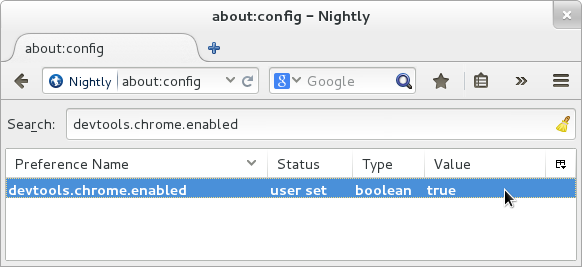
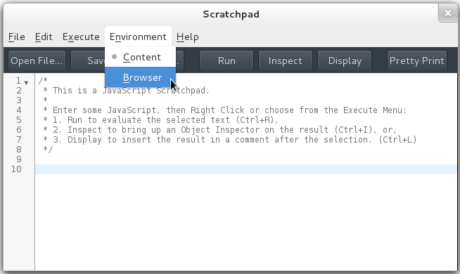
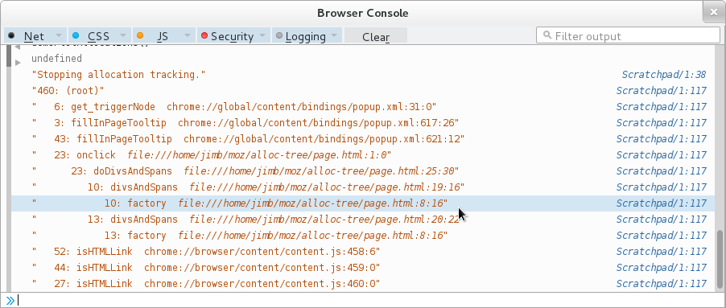

Tutorial: Show Allocations Per Call Path
This page shows how to use the Debugger API to show how many objects a web page allocates, sorted by the function call path that allocated them.
-
Visit the URL
about:config, and set thedevtools.chrome.enabledpreference totrue:Setting the 'devtools.chrome.enabled' preference
-
Open a developer Scratchpad (Menu button > Developer > Scratchpad), and select "Browser" from the "Environment" menu. (This menu will not be present unless you have changed the preference as explained above.)
Selecting the 'browser' context in the Scratchpad
-
Enter the following code in the Scratchpad:
// This simply defines the 'Debugger' constructor in this // Scratchpad; it doesn't actually start debugging anything. Components.utils.import('resource://gre/modules/jsdebugger.jsm'); addDebuggerToGlobal(window); (function () { // The debugger we'll use to observe a tab's allocation. var dbg; // Start measuring the selected tab's main window's memory // consumption. This function is available in the browser // console. window.demoTrackAllocations = function() { dbg = new Debugger; // This makes hacking on the demo *much* more // pleasant. dbg.uncaughtExceptionHook = handleUncaughtException; // Find the current tab's main content window. var w = gBrowser.selectedBrowser.contentWindow; console.log("Tracking allocations in page: " + w.location.href); // Make that window a debuggee of our Debugger. dbg.addDebuggee(w.wrappedJSObject); // Enable allocation tracking in dbg's debuggees. dbg.memory.trackingAllocationSites = true; } window.demoPlotAllocations = function() { // Grab the allocation log. var log = dbg.memory.drainAllocationsLog(); // Neutralize the Debugger, and drop it on the floor // for the GC to collect. console.log("Stopping allocation tracking."); dbg.removeAllDebuggees(); dbg = undefined; // Analyze and display the allocation log. plot(log); } function handleUncaughtException(ex) { console.log('Debugger hook threw:'); console.log(ex.toString()); console.log('Stack:'); console.log(ex.stack); }; function plot(log) { // Given the log, compute a map from allocation sites to // allocation counts. Note that stack entries are '===' if // they represent the same site with the same callers. var counts = new Map; for (let site of log) { // This is a kludge, necessary for now. The saved stacks // are new, and Firefox doesn't yet understand that they // are safe for chrome code to use, so we must tell it // so explicitly. site = Components.utils.waiveXrays(site.frame); if (!counts.has(site)) counts.set(site, 0); counts.set(site, counts.get(site) + 1); } // Walk from each site that allocated something up to the // root, computing allocation totals that include // children. Remember that 'null' is a valid site, // representing the root. var totals = new Map; for (let [site, count] of counts) { for(;;) { if (!totals.has(site)) totals.set(site, 0); totals.set(site, totals.get(site) + count); if (!site) break; site = site.parent; } } // Compute parent-to-child links, since saved stack frames // have only parent links. var rootChildren = new Map; function childMapFor(site) { if (!site) return rootChildren; let parentMap = childMapFor(site.parent); if (parentMap.has(site)) return parentMap.get(site); var m = new Map; parentMap.set(site, m); return m; } for (let [site, total] of totals) { childMapFor(site); } // Print the allocation count for |site|. Print // |children|'s entries as |site|'s child nodes. Indent // the whole thing by |indent|. function walk(site, children, indent) { var name, place; if (site) { name = site.functionDisplayName; place = ' ' + site.source + ':' + site.line + ':' + site.column; } else { name = '(root)'; place = ''; } console.log(indent + totals.get(site) + ': ' + name + place); for (let [child, grandchildren] of children) walk(child, grandchildren, indent + ' '); } walk(null, rootChildren, ''); } })(); -
In the Scratchpad, ensure that no text is selected, and press the "Run" button. (If you get an error complaining that
Components.utilsis not defined, be sure you've selectedBrowserfrom the scratchpad'sEnvironmentmenu, as described in step 2.) -
Save the following HTML text to a file, and visit the file in your browser. Make sure the current browser tab is displaying this page.
<div onclick="doDivsAndSpans()"> Click here to make the page do some allocations. </div> <script> function makeFactory(type) { return function factory(content) { var elt = document.createElement(type); elt.textContent = content; return elt; }; } var divFactory = makeFactory('div'); var spanFactory = makeFactory('span'); function divsAndSpans() { for (i = 0; i < 10; i++) { var div = divFactory('div #' + i); div.appendChild(spanFactory('span #' + i)); document.body.appendChild(div); } } function doDivsAndSpans() { divsAndSpans(); } </script> -
Open the browser console (Menu Button > Developer > Browser Console), and then evaluate the expression
demoTrackAllocations()in the browser console. This begins logging allocations in the current browser tab. -
In the browser tab, click on the text that says "Click here…". The event handler should add some text to the end of the page.
-
Back in the browser console, evaluate the expression
demoPlotAllocations(). This stops logging allocations, and displays a tree of allocations:An allocation plot, displayed in the console
The numbers at the left edge of each line show the total number of objects allocated at that site or at sites called from there. After the count, we see the function name, and the source code location of the call site or allocation.
The
(root)node's count includes objects allocated in the content page by the web browser, like DOM events. Indeed, this display shows thatpopup.xmlandcontent.js, which are internal components of Firefox, allocated more objects in the page's compartment than the page itself. (We will probably revise the allocation log to present such allocations in a way that is more informative, and that exposes less of Firefox's internal structure.)As expected, the
onclickhandler is responsible for all allocation done by the page's own code. (The line number for the onclick handler is1, indicating that the allocating call is located on line one of the handler text itself. We will probably change this to be the line number withinpage.html, not the line number within the handler code.)The
onclickhandler callsdoDivsAndSpans, which callsdivsAndSpans, which invokes closures offactoryto do all the actual allocation. (It is unclear whyspanFactoryallocated thirteen objects, despite being called only ten times.)
Source Metadata
- Generated from file:
- js/src/doc/Debugger/Tutorial-Alloc-Log-Tree.md
- Watermark:
- sha256:b56f6df61c39dbe19ca1f49752aea42207c804355513f4fea8249bdeb4cb056d
- Changeset:
- 251fccc1f62b